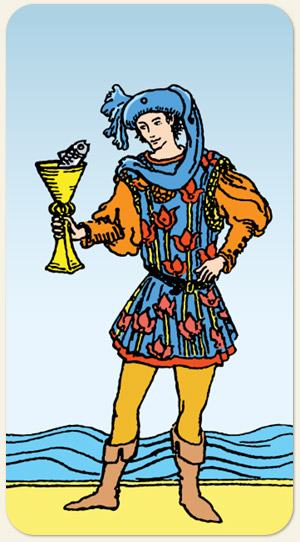

O despertar intuitivo, as notícias emocionais e a criatividade sensível. É a figura do "eterno aprendiz" das emoções, alguém que aborda a vida com gentileza e uma dose de ingenuidade poética. Representa o surgimento de um novo sentimento, um convite inesperado ou a necessidade de prestar atenção aos sonhos e insights que emergem do subconsciente.
Grande força introspectiva, traz muito do mundo encantado, da infância e dos contos de fadas, tem o mimo e o drama do negativo de água, desde a doçura até a birra.
Positivo: Nostalgia, encanto, doçura, fofura, não é um amor maduro e incondicional mas é um querer bem.
Negativo: Mimado, fantasioso, carente, choroso, uma hora ama e outra hora odeio, afogar-se em seus próprios sentimentos, emoções desgovernadas, faz escândalo para ganhar atenção, grudento, não cresce, infantil, dependente, dissimulado, falso.
Símbolos: Peixe, Túnica, Flores, Chapéu com Lenço, Mar Agitado.
Cores: Azul, Amarelo, Vermelho.